One Model,
Three Visual Stacks Compared
Finance reporting in Power BI: the same questions, one lean model, and the same P&L page built every way Power BI allows. Everything costs. Nothing always wins.
Michael Tenner · Daten-WG by platformimpulse · Köln
Michael Tenner
Full Stack Power BI Engineer · Daten-WG by platformimpulse
Finance and controlling reporting on Power BI and Fabric. Builds the open-source visuals ChartKitchen and P&L Statement byDatenWG, writes the Daten-WG Knowledge Kitchen, and compares things that all cost money.
BI-Forum-Budapest-2026
Actual. Then compared to something.
Previous year, plan, forecast. Not always all of them, but always the same four, and always the same way.
Revenue · actual by month
What happened
The number itself. Solid, dark, the only thing that is real.
Better than last year?
Easiest comparison, least useful alone. Last year had its own one-offs.
Did we keep the promise?
Plan or budget, the outline we committed to. The variance is the story.
Where do we land?
Forecast fills the open months, hatched, because it is not real yet.
Time runs as columns
Months left to right, the scenarios are the third axis. The ΔPY bars sit on the scale of the columns: +22 m is nine percent of the 245 m January column. The Δ % pins keep their own unit.
Time · revenue by month, AC vs PY · ΔPY and ΔPY % on top
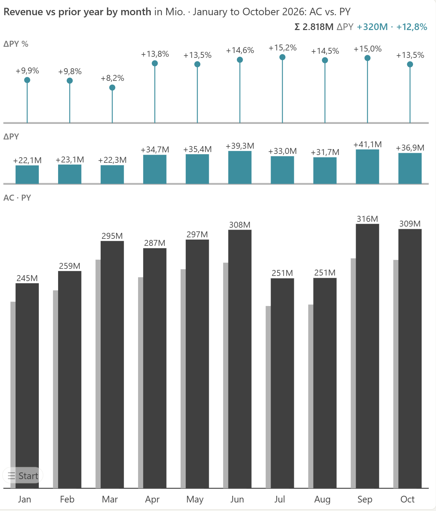
Structure runs as bars
Same visual, rotated, same notation: AC filled, PL outlined, ΔPL and ΔPL % beside. Four companies below plan, Mobility FR with −32.3 m. The variance column says so without a second chart.
Structure · revenue by company, AC vs PL · ΔPL and ΔPL % beside
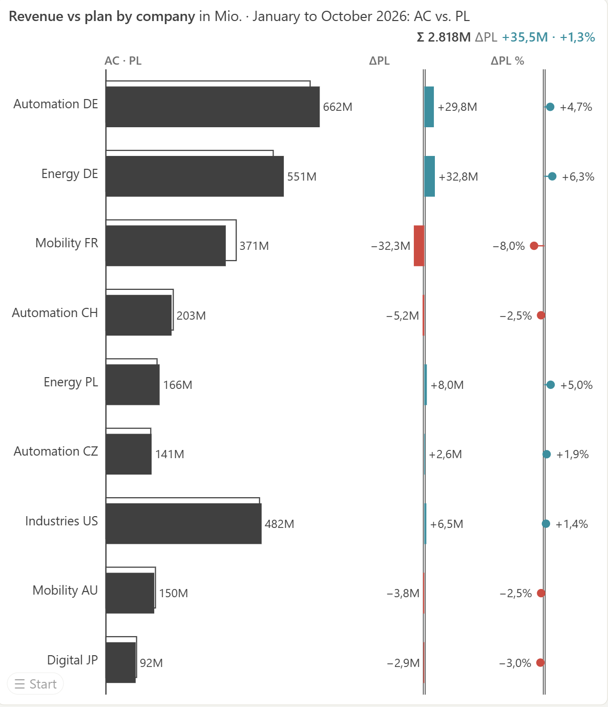
IBCS on one page
The SUCCESS rules. We are not members and not certified: inspiration, with the notation taken literally.
A P&L is a calculation, not a structure
IBCS treats it as a calculation scheme: operators (+ − =), subtotals, a vertical calculation waterfall, never sorted by size. It needs a hierarchy, formulas and a sign.
P&L Statement byDatenWG · demo report, template T03A: PY, PL, AC, ΔPY, ΔPL

Group P&L of DWG Industries, nine companies. Revenue +12.8 % reported · +8.7 % organic at PY rates (acquisition Digital JP +3.7 pp, FX +0.4 pp). Δ = AC − PL of the shown value; colour carries good or bad (IBCS).
- Hierarchy and subtotals. Net revenue is not in the fact table, it is the children added with their signs.
- Formulas. Gross profit, EBITDA, margins. Formula on formula.
- The sign. A cost row calculates with −1, shows positive, and "less" is favourable. One wrong and an overrun turns green.
- Windows. Month, YTD and full year from the same monthly rows, forecast hatched where actuals stop.
Management P&L, cost-of-sales format with D&A shown separately. Under IFRS 18 (from 2027) EBITDA becomes a disclosed MPM: one more formula row in the account dimension, not a new report.
Every stack has to solve these four somewhere: in DAX, in a spec, or inside the visual. Where it lands decides cost, maintainability, and who can change it in two years.
The model answers the questions. The visuals only draw them.
One account dimension, one fact table at month grain, a date table, a rate table related to date and currency. Thin role measures, no time intelligence in the model. The same model under every rung.
Star schema, one snowflake branch (region) · DWG Industries, nine companies, seven currencies
Month grain, empty not zero
A 0 in November makes November an actual month. PY, PL and FC cover all twelve months.
Full year is a scalar
Repeated on every month row: MAX per account, company and year, then summed. SUM is twelve times too large.
Sign trio in the dimension
Cost row: −1 · shown positive · less is favourable. Three flags, three jobs: compute, display, judge. Get one wrong and an overrun turns green.
Thin measures, no YTD
One measure per role. The visual cuts month, YTD and FY from the last month with actuals. Forecast versions and restated PY are one more column or a version dimension in the fact; the visuals do not change.
Every rung works. Each one pays differently.
Pure Power BI
Core visuals, no code, notation only approximated.
Copilot can build and edit it today (paid capacity F2+/P1+).
Rules: in your headDAX only
Measures, a line table for subtotals, format strings.
Everything auditable, every change is a measure.
Rules: in DAXSVG measures + UDF
Measures return SVG images in table cells.
UDFs GA since June 2026, IBCS packages on daxlib.org.
Rules: in DAXDeneb (Vega) · HTML
The chart is a Vega-Lite spec: text, Git, templates.
Deneb and HTML Content (lite) are Microsoft-certified; full HTML Content is not.
Microsoft announced native Vega-Lite for Power BI at FabCon 2026, no date yet. Specs written today stay portable.
Rules: in the specCustom visual
Open: ChartKitchen, P&L Statement byDatenWG, free, you maintain it.
Paid: Zebra BI, Inforiver, graphomate, IBCS-certified, licence per reader.
Rules: inside the visualFabric Apps
The same charts as React ports, outside the report canvas.
Preview, some regions, readers need Build permission on the model, no Git sync yet.
Rules: at risk of moving into app codeCoding agents build visuals in hours today, which moves every rung · own visuals shown: ChartKitchen and P&L Statement byDatenWGSame model under all six
- One report, one page per rung, one model: DWG Industries, nine companies, seven currencies.
- Same P&L page, same numbers. Switch the company slicer in each. Who is still right, who is still fast?
- Performance Analyzer on screen, DAX time and render time apart.
- Day three, 10:40: one booking changes, every rung shows the same new number, because none of them owns a number: net income 151.6 → 155.6 on every P&L page, stamp included.
- Every page states its data-as-of: actual to October, plan and forecast to December.
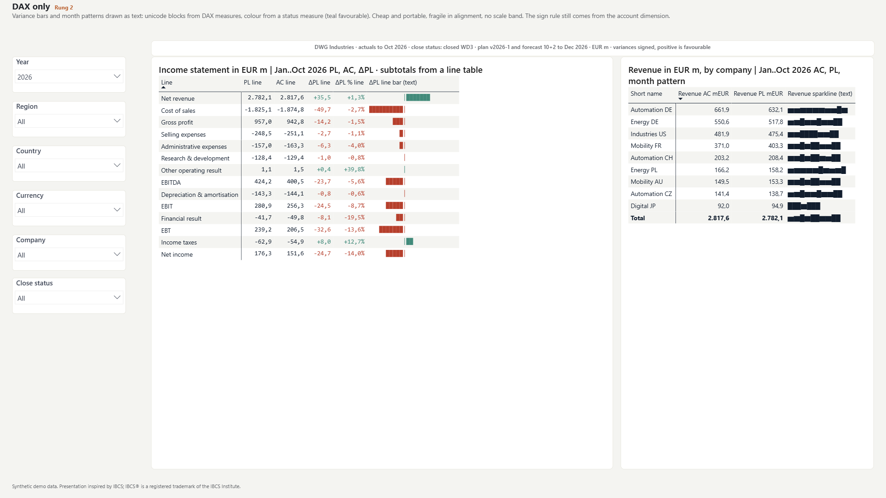

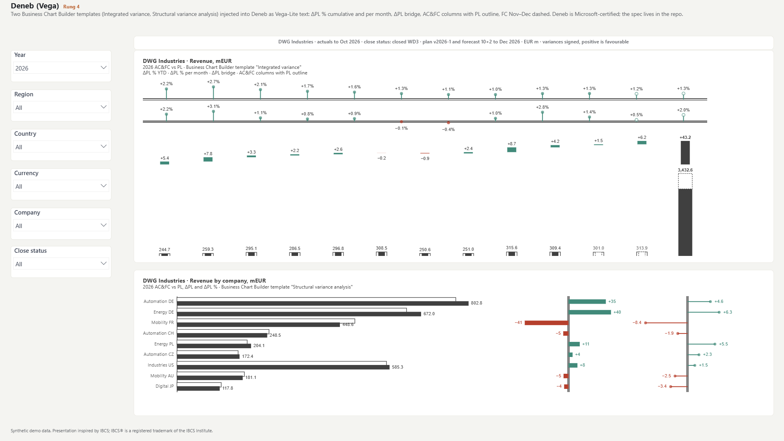

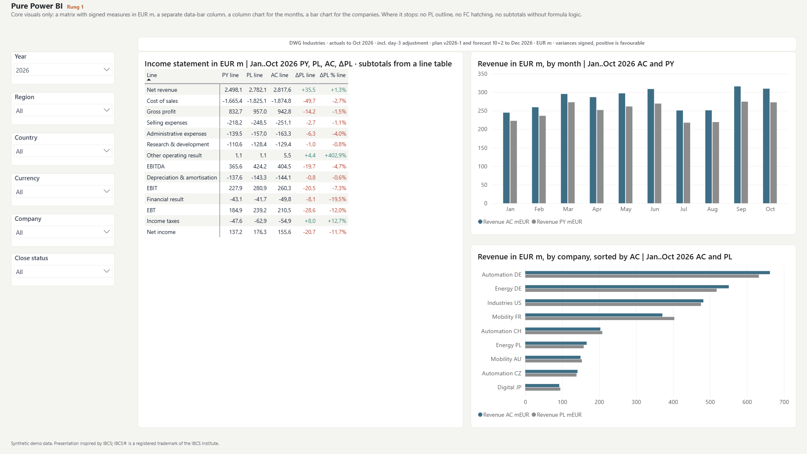
Everything costs. Nothing always wins.
The Visual Standards Calculator: four approaches, three-point estimates, 1,500 scenarios, P10 to P90 per reader and year.
Live · preset "Finance with mandatory IBCS": 5 authors, 150 readers, 80 EUR anchor, 5 years · open the calculator ↗
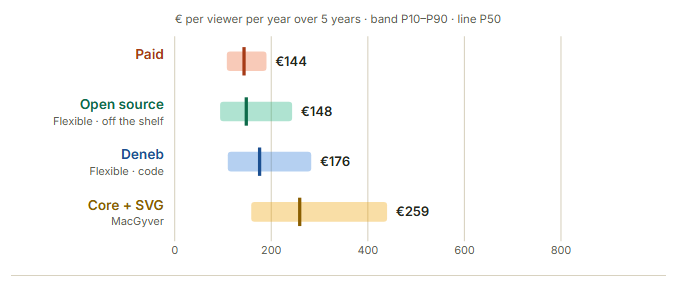
Paid and Open source are indistinguishable within the band at about 144 EUR per reader and year; Deneb 1.2 times, Core + SVG 1.8 times as much. From about 176 readers for these 5 authors the licence per head costs more than the cheapest hours-based approach.
Hours at 125 EUR/h fully loaded · Power BI Pro/PPU or Fabric capacity excluded (same for every stack, larger than any difference shown) · list prices, no escalation, no discounting.
- Negotiate below ~92 EUR per user and year and Paid beats building it yourself at 150 readers.
- Readers per creator. Licences scale with heads, hours do not. Here the tipping point is 176 readers for 5 authors; it moves with the licence anchor.
- Licence anchor. 33, 80 or 170 EUR per user: Inforiver level, mixed, Zebra level. Anchors include support, add-ons and enterprise tiers; Zebra BI list price is about 65–70 EUR per user and year at 10–50 users.
- A template library for Deneb and Core: hours per chart drop to 0.6 and 0.7.
- Red flags. "Core visuals only" leaves Core. "IBCS certificate mandatory" leaves Paid.
- Semantic models. A visual is a tenant object, a DAX function lives per model: twenty models, Core +209 %.
Michael Tenner & Diana Ackermann · in the browser, settings travel in the link
Rules in the model. Pick the rung by who pays and who maintains.
Because the rules sit in the model, switching the visual later is a report rebuild, not a migration.
Ratings from calculator, demo and seven reviews; I build rung 5a, discount my ratings there.
| Rung | IBCS fit (as shown today) | Platform risk | Cost per reader and year 150 readers, 5 authors | Maintainability | Self-service with AI | Export & audit trail | Avoid when |
|---|---|---|---|---|---|---|---|
| 1 Pure Power BIrules in your head | no hatching, variance by hand | Q&A retires 02/2027 | 259 €Core+SVG; a plain page is cheaper | every page hand-built; subtotals via a line table | Copilot builds it (paid capacity) | export, subscriptions, logic visible | IBCS mandatory for all reports |
| 2 DAX onlyrules in DAX | numbers and colour only | low | 259 € | every change a measure | agents write DAX, readers cannot | all in the model; Excel export carries the bar as text | more than a handful of pages |
| 3 SVG measures + UDFrules in DAX | notation yes, interaction no | Service rendering regressions | 259 € | per model: 20 models +209 % | UDF library helps authors | Excel export carries the SVG text, not the bar | many models, capacity at the limit |
| 4 Deneb (Vega) · HTMLrules in the spec | anything you spec, if you spec it | Deneb v2 = new visual, opt-in | 176 € | JSON in Git, templates to keep | agents yes, Copilot no, readers no | Microsoft-certified | nobody will maintain JSON |
| 5a Custom visual, openrules inside the visual | built for it, not certified | certification rules | 148 € | your repo, abandonment risk | readers switch views, agents bind roles | no PDF/PPT export, no subscriptions: knock-out for a board pack | export or subscriptions are a must |
| 5b Custom visual, paidrules inside the visual | certified software; conformity still the author's job | vendor pricing | 144 €tips at 176 readers | vendor roadmap and support | readers yes, closed to agents | export yes, logic closed | no licence budget, publish-to-web |
| 6 Fabric Appsrules at risk in app code | same React ports, not shown | preview, no Git | capacity today, Pro/PPU announced | no Git sync yet | built by coding agents | logic leaves the model; readers need Build on the model | audit wants the logic in the model |
Your decision in four numbers
Readers per author, licence price, your hourly rate, PDF required?
Rules first: sign, FY scalar, currency, FX effect, close status go into the semantic model. Done once, every stack can be dropped later.
PDF export or subscriptions mandatory (board pack): rungs 1, 4 or 5b. Rung 5a is out today.
Above ~35 readers per author, IBCS mandatory, licence under ~92 EUR: 5b. Below: 4, or 5a if someone in-house can maintain the source.
Not included: Pro/PPU/Fabric capacity (same for all), training, change management. Horizon 3 years, 125 EUR/h.
Send me your four numbers, you get the calculator link with your preset.
Put the rules in the model this quarter. Pick the visual per audience. Re-decide when the reader count doubles.
Thank you
Michael Tenner · Daten-WG by platformimpulse · Köln
BI-Forum-Budapest-2026
Why Paid and Open source tie at 150 readers
Why this result, and what turns it · calculator, level 1, finance preset
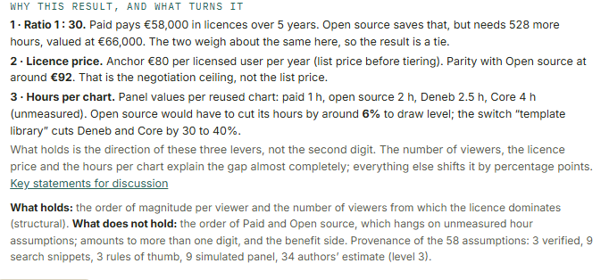
- Ratio 1:30. Paid pays 58,000 EUR in licences over five years. Open source saves that but needs 528 more hours, valued at 66,000 EUR. A tie.
- Licence price. Anchor 80 EUR per user and year. Parity with Open source at about 92 EUR: the negotiation ceiling, not the list price.
- Hours per chart. Panel values per reused chart: paid 1 h, open source 2 h, Deneb 2.5 h, Core 4 h, unmeasured.
The order of magnitude per reader and the reader count where licences dominate hold. The order of Paid and Open source hangs on unmeasured hour assumptions. Of 58 assumptions, 3 are verified, 9 search snippets, 3 rules of thumb, 9 simulated panel, 34 authors' estimates.
Pure Power BI: the one stack Copilot can touch
Core visuals · matrix with sign-aware measures and conditional formatting, column and bar chart
Demo report, rung 1: Gross profit, EBITDA and Net income come from a line table (pnl-lines) and four line measures; signed AC, PY, PL, ΔPL, data bars and font colour from rules. No plan outline, no variance panel.
- Copilot builds and edits reports only with core visuals (paid capacity)
- No approval, no vendor, runs in Report Server, sovereign cloud, publish-to-web
- Best theme control, ALM and Git, drill, copy to PowerPoint
- Notation only approximated: no hatching, no variance panels, no scenario outlines
- Deprecation is not zero: Q&A goes away in February 2027.
- Subtotals need a line table and four measures (rules in DAX); the plain matrix alone stops at the sum
- Every page is hand-built; nothing to reuse between reports
IBCS is mandatory for all reports, or readers expect to switch views themselves.
DAX only: everything auditable, everything a measure
DAX only · unicode text bars and sparklines from measures, colour from a status measure
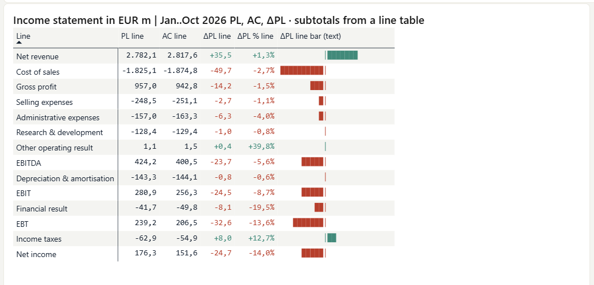
Demo report, rung 2: variance bar and month pattern are text (REPT and block characters), colour comes from a status measure; Gross profit, EBITDA and Net income come from the same line table as on rung 1. Cheap and portable, fragile in alignment, no scale band.
- Everything lives in the model and shows up in an audit
- No visual dependency, survives every Power BI update
- Sign logic and subtotals reusable across pages: a line table and four line measures
- Every change is a measure change, workaround upkeep
- Calculator assumptions for Core: maintenance 12 / 30 / 48 % per year, three breaking updates a year at 9.5 h each
- No real notation: no hatching, variance only as numbers or colour
More than a handful of pages, or the team does not love DAX.
DAX + SVG + UDF: far, but handmade
SVG measures + UDF · hand-written SVG next to PowerofBI.IBCS 0.11.0 (daxlib.org), both rendered as image URLs in the matrix
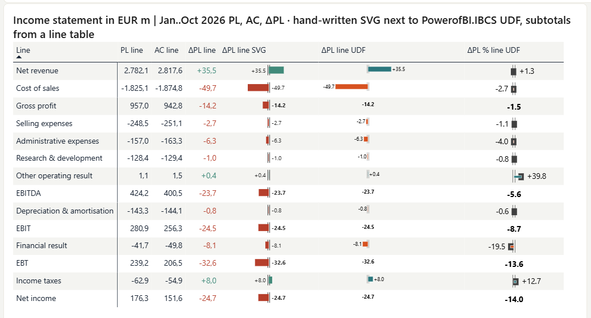
Demo report, rung 3: the hand-written ΔPL SVG (double line = plan) next to two one-call UDF measures from PowerofBI.IBCS: absolute variance bar and relative variance pin, scaled across all rows, bold on the total. The library needs model culture en-US and compatibility level 1702; size, tooltips and export stay the limits.
- DAX user-defined functions GA since June 2026 (compatibility level 1702); SVG and IBCS packages on daxlib.org: DaxLib.SVG, PowerofBI.IBCS
- Full notation possible: hatching, outlines, variance bars, pins
- Text in the model: Git-able, diff-able, auditable
- A waterfall costs about four times a plain chart; author estimate 2.2 / 3.5 / 5.5, no source
- Test every SVG measure in the Service before release; Excel export carries the SVG text, not the bar
- A function lives per model, a visual per tenant: at twenty models Core rises 209 percent
- UDFs: no display folders, no translations, no inherited OLS
Many semantic models, capacity at the limit, or the CU cost of DAX-rendered images is unmeasured in your tenant.
Deneb and HTML: flexibility paid in template upkeep
Deneb · Business Chart Builder templates 'Integrated variance' and 'Structural variance analysis' on the demo model
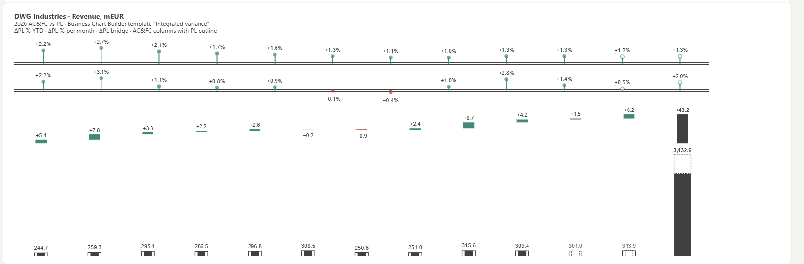
Demo report, rung 4: Vega-Lite specs, written as text and injected into the visual; Deneb comes from AppSource and is certified. The Business Chart Builder exports these templates.
- Certified, on AppSource, free; passes "certified visuals only"
- Specs are text: diff-able, in Git, they survive the host visual
- Template libraries exist (vegaviz, DenebIBCS); coding agents write Vega well
- Vega-Lite announced as native Power BI feature at FabCon 2026 (no date): specs stay portable
- About 35 hours of training per template builder
- Deneb 2.0 is a separate certified visual; v1 stays certified, migration via template export/import
- Copilot cannot edit it; drill 2 of 5, mobile 2 of 5
- Maintenance 10 to 27 percent, governance 8 to 44 hours a year; three incidents in 24 months
- Hierarchy, subtotals and formulas come pre-computed from DAX or get built into the spec
Nobody on the team will maintain JSON in two years, or interactive collapse and drill are required.
Custom visual, open: fastest build, your own upkeep
P&L Statement byDatenWG · template T03A on the demo model
Template T04B adds integrated ΔPL bars and pins.
- Bind the roles, the visual computes hierarchy, subtotals, formulas, sign trio and windows; one template click
- Five views from one binding: table, mega table, bars, driver tree, Sankey; readers switch themselves
- No licence, no telemetry, no external calls; agent guide for AI authors
- Not Microsoft-certified: no PDF or PowerPoint export and no subscriptions in the Service, also when delivered through the org store
- Approval 8 / 24 / 60 hours; maintenance 12 to 32 percent; abandonment risk 3 to 13 percent a year
- 30,000-row window like every custom visual; fetchMoreData raises it to 1,048,576 rows
The tenant allows certified visuals only and offers no organizational store, or nobody owns the visual's roadmap.
Custom visual, paid: finished, certified, per head
Zebra BI · working capital overview: KPI cards, table with ΔPL waterfall, monthly bridge
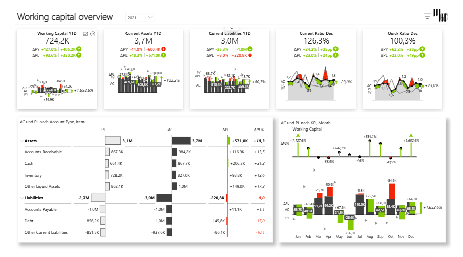
Zebra BI for Power BI: 14-day trial, then team plans (list price about 65–70 EUR per user and year at 10–50 users, vendor page 11/2026; quotes differ). Inforiver and graphomate follow similar models. The same P&L page in one of them is still to capture.
- IBCS-certified out of the box; the free visuals are not
- Finished: fastest path to a standard page, vendor support, roadmap; a 14-day trial to start with
- Readers switch views and comment without an author
- Licence per user, tiered; list prices from the vendor page 11/2026, quotes differ
- In the finance preset the licence per head tips against you at 176 readers for 5 authors; the point moves with the price
- AppSource licence enforcement is absent in Report Server, sovereign cloud, publish-to-web and app-owns-data embedding; vendors with their own keys fill the gap
- Closed source: calculation logic not inspectable; price rises arrive as model changes
No licence budget, publish-to-web, or an audit wants to read the calculation. Report Server only with vendor licence keys.
Fabric Apps: the same visuals, outside the canvas
Sales controlling app · ChartKitchen as a React port in a Fabric App, live DAX on the semantic model
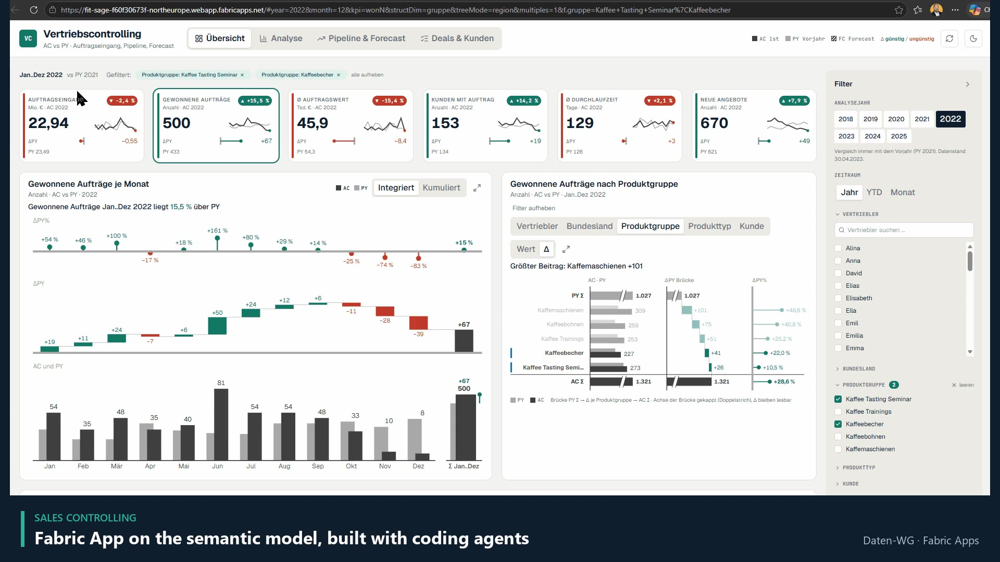
- Zoom from one chart into small multiples, driver trees, details on demand, filter panels
- One spec, two targets: the dwg CLI writes report and app, same visuals, same DAX; a parity test fails when numbers differ (early preview, developed in public)
- Four apps in the demo workspace, about an hour each to build with coding agents
- Every reader needs Build permission on the semantic model; preview, regional, not in Fabric Git
- Small F-SKUs throttle quickly
- When the model is weak, the app calculates in the browser: fast, invisible to auditors
The audit wants the calculation logic in the model, or the capacity is already at the limit. Fabric Apps add what reports cannot. They do not replace your semantic model.
Currency: compute local, translate after
| Measure | Column | Rate type | Purpose |
|---|---|---|---|
| AC signed | AC | current, monthly average | reported actual |
| PL signed | PL | budget, fixed per plan year | plan, at budget rate |
| PY signed | PY | prior-year actual rate | prior year as reported then |
| AC signed @BUD | AC LC | budget, per currency and year | actual without currency moves |
| FX effect | [AC signed] − [AC signed @BUD] | its own line, not noise | |
| ΔPL @BUD | [AC signed @BUD] − [PL signed @BUD] | operating variance | |
| AC LC | AC | none | one currency in the filter, else blank |
Income statement and cash flow at average rate, balance sheet at closing rate (IAS 21). Facts keep local currency; the rate table holds average, closing and budget rate per currency. Rates for every period and type, or DIVIDE goes blank silently; several currencies in one filter blank the local-currency measures on purpose.
FX and close · demo page, actual rate vs budget rate
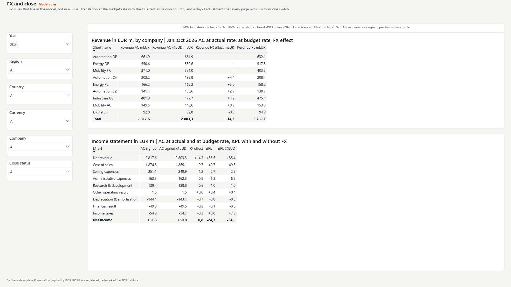
Net revenue 2,817.6 at actual rates, 2,803.3 at budget rate: FX effect +14.3. Automation CH alone +4.4 (203.2 vs 198.8): the franc, not sales. Net income: FX effect +0.8; ΔPL −24.7 reported, −24.5 at budget rate.
fact-kurse[Kurs Budget], one rate per currency and year. Caveat: the demo plan in EUR was translated at actual rates in the generator, so ΔPL @BUD compares against the plan re-translated from local currency at the budget rate.Rules: in the modelA generated group, reconciled to the cent
- DWG Industries SE, a fictional industrial group: four segments, three regions, nine companies, seven currencies (EUR, CHF, PLN, CZK, USD, AUD, JPY), about 3.4 bn EUR revenue in 2026
- Seven CSV files from one Python generator with a fixed seed, byte-identical on every run:
generate_demokit.py - fact-abschluss: 63,936 rows, account × company × month, AC/PY/PL/FC each in EUR and in local currency; values in base units, the visuals scale
- dim-konten: 296 lines, P&L 128, balance sheet 102, cash flow 66, names in German and English, sign trio, stock and opening tokens
- fact-kurse: 168 monthly rates, average and closing, plus one budget rate per currency and year
- For the demo: fact-nachbuchung (one day-3 booking, Mobility FR, +4.0 m), the switch close-status, and pnl-lines, 14 statement lines with Gross profit, EBITDA, EBIT, EBT, Net income
- Time: actual January 2025 to October 2026, forecast November and December, plan for both years; PY is the actual shifted by twelve months, at the rate of that month
- Translation happens in the generator, not in DAX (the budget-rate view is the one exception): P&L and cash flow at average rate, balance sheet at closing rate (IAS 21); the cash-flow bridge is derived from balance-sheet movements, so every movement appears exactly once
build_model_tmdl.pywrites the TMDL: five dimensions, two fact tables, thin measures; the three demo tables and their measures were added by handreconciliation.txtholds the acceptance values: FY 2026 forecast (FC 10+2) revenue 3,440 m and EBITDA 495 m recomputed from the CSVs; the balance sheet control row is zero in every filter- The report spec
budapest.jsonbinds the English columns;dwg check: 6 pages, 8 tiles, 0 problems;pbir validate --fields: 236 fields resolved - Page filter: Period status = Actual, so ten actual months never meet twelve plan months
Synthetic data can be published, reconciled and regenerated. Real data could not be shown, and a hand-made sample would not survive a sign-trio check. Synthetic group: entities are third-party only, no intercompany, no elimination entity, NCI only in the balance sheet. The model does not consolidate, it reports.
reconciliation.txt in the material repository · built for P&L Statement byDatenWG 1.7Rules: in the modelSix measures carry the whole statement
AC = SUM ( 'fact-abschluss'[AC Wert] ) PY = SUM ( 'fact-abschluss'[PY Wert] ) PL = SUM ( 'fact-abschluss'[PL Wert] ) FC = SUM ( 'fact-abschluss'[FC Wert] )
No YTD, no sign, no time intelligence. The visual cuts month, YTD and full year itself.
Revenue AC =
CALCULATE (
SUMX ( 'fact-abschluss',
'fact-abschluss'[AC Wert]
* RELATED ( 'dim-konten'[SignConvention] ) ),
KEEPFILTERS ( 'dim-konten'[L1 EN] = "Net revenue" )
)A plain SUM would add sales deductions instead of subtracting them.
AC line =
VAR _Type = SELECTEDVALUE ( 'pnl-lines'[Line Type] )
VAR _Line = SELECTEDVALUE ( 'pnl-lines'[Line] )
VAR _Upto = SELECTEDVALUE ( 'pnl-lines'[Upto Sort] )
RETURN SWITCH ( _Type,
"line", CALCULATE ( [AC signed], KEEPFILTERS (
TREATAS ( { _Line }, 'dim-konten'[L1 EN] ) ) ),
"subtotal", CALCULATE ( [AC signed],
KEEPFILTERS ( 'dim-konten'[L1 Sort] < _Upto ) ) )A subtotal sums every line above it. PL, PY and ΔPL line work the same way.
FC FY =
VAR _Scope =
SUMMARIZE ( 'fact-abschluss',
'fact-abschluss'[AccountID],
'fact-abschluss'[EntityID],
'dim-datum'[Jahr] )
RETURN
SUMX ( _Scope, CALCULATE ( MAX ( 'fact-abschluss'[FC_FY] ) ) )SUM would be twelve times too large. A plain MAX returns the largest single account-company cell, 215 m instead of 3,440 m.
AC LC =
IF ( HASONEVALUE ( 'dim-gesellschaft'[Währung] ),
SUM ( 'fact-abschluss'[AC LW Wert] ) )Several currencies in the filter: blank on purpose. Adding CHF to JPY is not a number.
AC at reporting date sums flows over the window, takes balance-sheet stocks at the last date and opening balances at the first date, driven by the account's Zeitaggregation token. That is what lets the balance sheet and the cash-flow bridge sit next to the P&L in one visual.
fact-abschluss.tmdl of the demo model · Currency translation and security stay in the model. Time windows: the custom visual cuts them itself; on rungs 1–4 one flag in the date table does it.Rules: in the model